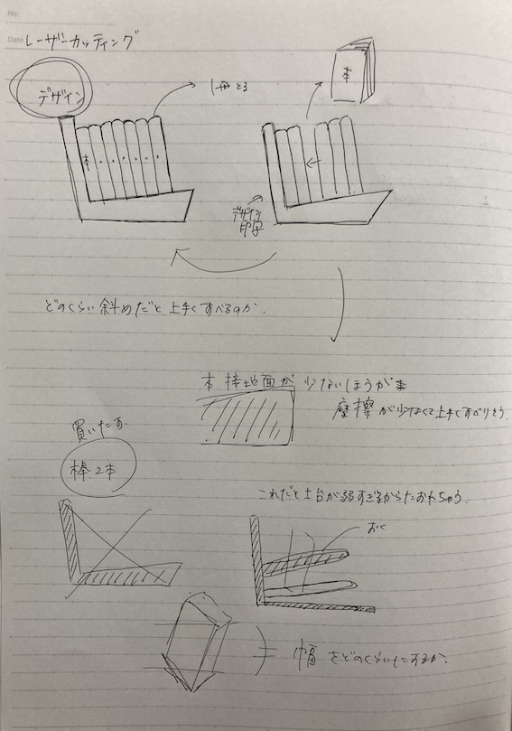
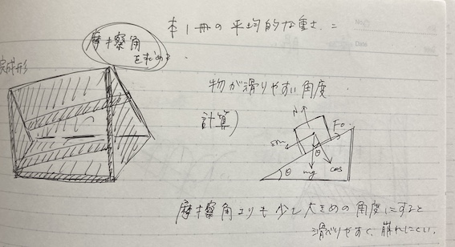

制作作品
スライド式本棚（構想のみ）
1.構想
木で本棚を作る。どこの本を抜いても本と本の間が開かないように、下材を坂上にして真ん中の本をとっても崩れないようにする。
2.スケッチ・設計図


3.計算
本が綺麗に滑るような角度にするために、摩擦核を求めた。
4.作れなかった原因
木のサイズが足りなかったのと、棒状の部分も開いたから作ろうとしたけど、カクカクで丸まっても本の紙に引っかかってしまった。
前のページへ戻る